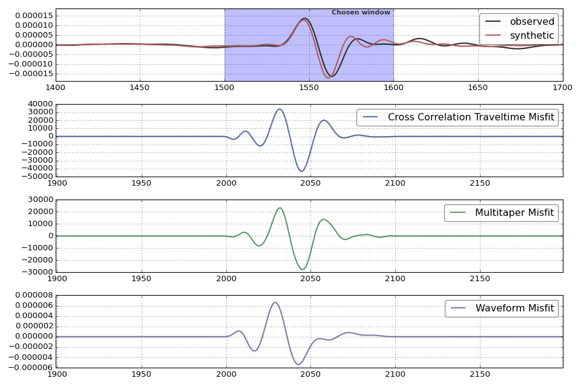

Adjoint Sources¶
Pyadjoint can currently calculate the following misfits measurements and associated adjoint sources:
Comparative Plots of All Available Adjoint Sources¶
Pdif Phase on Vertical Component¶
This example contains Pdif and some surface reflected diffracted phases recorded on the vertical component.

Sdif Phase on Transverse Component¶
This example contains Sdif and some surface reflected diffracted phases recorded on the transverse component.
